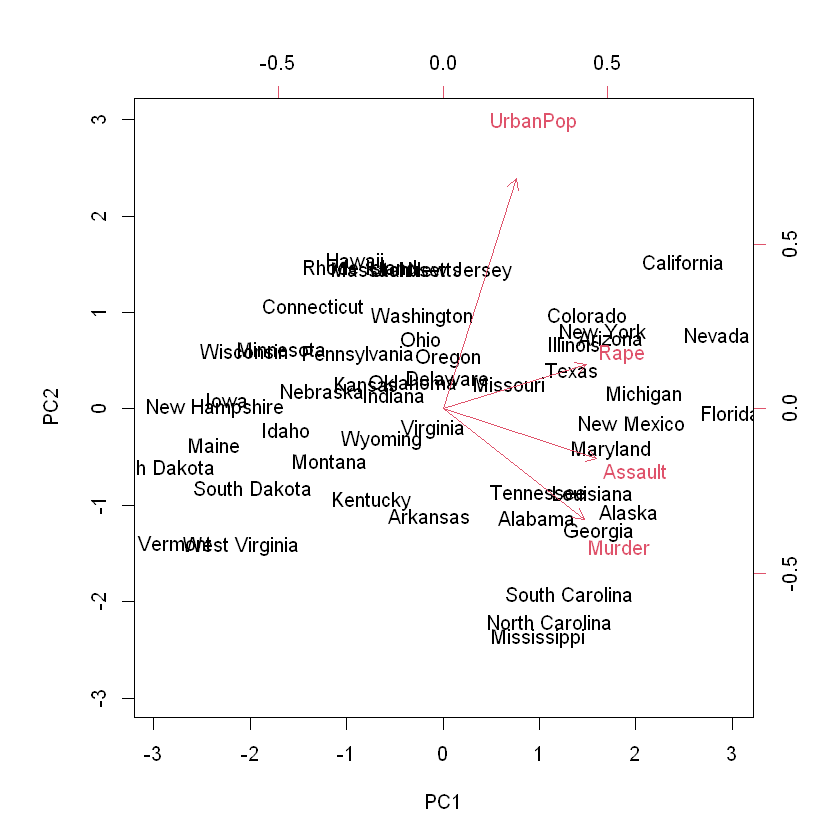
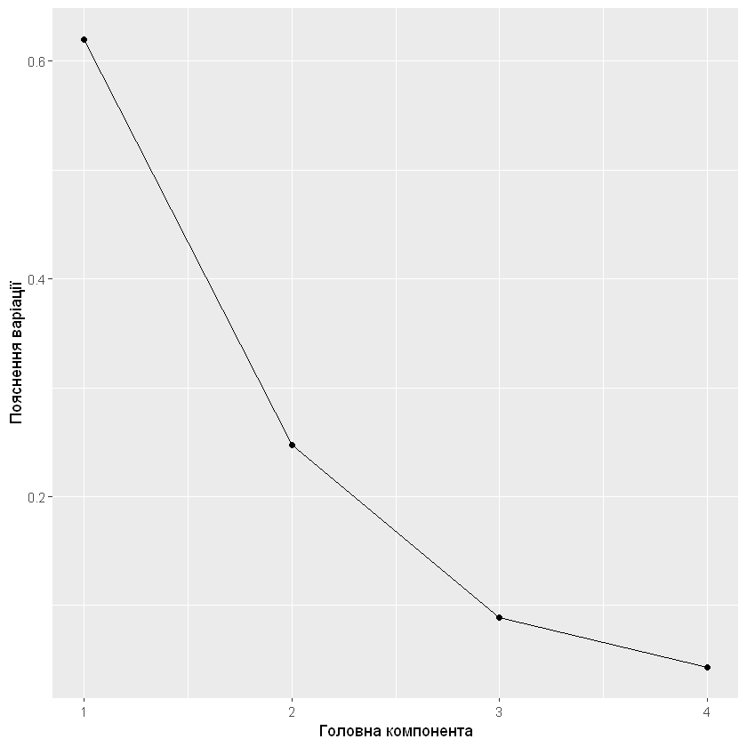
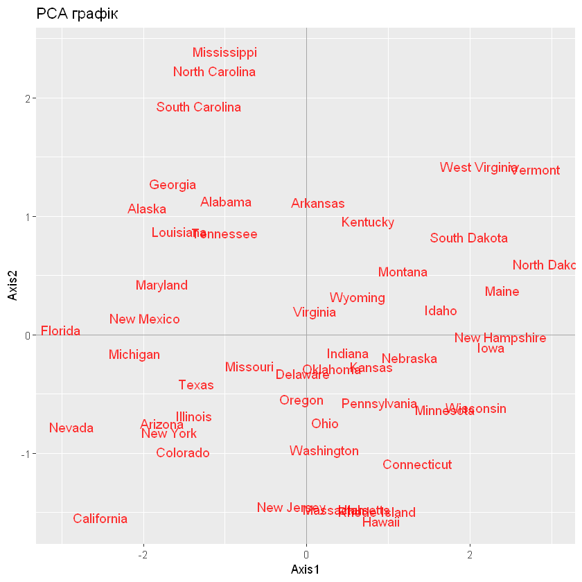

Sys.setlocale("LC_CTYPE", "ukrainian")
options(warn = -1)
'Ukrainian_Ukraine.1251'
Груповий проєкт з курсу “Прикладне математичне моделювання в R”
Група: ЕК-3.
Факультет: Економічний факультет.
Рік: 2022
Sys.setlocale("LC_CTYPE", "ukrainian")
options(warn = -1)Метою проєкту є теоретичне вивчення та практичне застосування алгоритмів з прикладного математичного моделювання в R. Додатковими задачами, які ставляться під час виконання проєкту є розвиток навиків самоосвіти та колективної роботи студентів. Основна задача, яка ставиться перед виконуючими - донести теоретичні засади такого методу аналізу, доступні пакети, візуалізувати роботу аналізу та практично показати використання методу.
Вступ
Principal Component Analysis або Аналіз головних компонентів (далі РСА) - техніка без вчителя для дослідницького аналізу даних, яка дозволяє краще візуалізувати варіацію, що знаходиться в наборі даних з багатьома змінними. Такий аналіз є дуже корисним у випадку так званих “широких” наборів даних, тобто, коли ми маємо багато змінних для кожної вибірки.
Зменшення кількості змінних у наборі даних відбувається за рахунок точності, але тут зменшення розмірності полягає в тому, щоб обміняти невелику точність на простоту. Адже менші набори даних легше досліджувати і візуалізувати. Це робить аналіз даних набагато простішим і швидшим для алгоритмів машинного навчання без зайвих змінних для обробки.
Отже, загальна ідея РСА - зменшити кількість змінних набору даних, зберігши при цьому якомога більше інфомації.
Де є корисний такий метод?
Метод корисний в будь-якій сфері, яка працює з великими наборами даних: медицина, наука, розробка і так далі. В таких випадках, коли присутня велика кількість змінних, ми не можемо побудувати графік даних в їхньому необробленому форматі, що дещо ускладнює розуміння досліджуваних тенденцій. РСА ж дозволяє побачити загальний вигляд даних, відмічаючи, які вибірки схожі одна на одну, а які дуже відрізняються. Це дозволяє визначити групи вибірок, які є схожими і з’ясувати, які змінні роблять одну групу відмінною від іншої.
Головні компоненти
Головні компоненти - це вже нові змінні, які будуються як лінійні комбінації або суміші вихідних змінних. Ці комбінації складаються таким чином, що нові змінні (наші головні компоненти) є некорельованими, а більша частина інформації, що міститься у вихідних змінних, стискається або витискається.
Якщо багато змінних корелюють одна з одною, то всі вони будуть вносити значний внесок в одну головну компоненту. Кожна компонента підсумовує певний відсоток загальної варіації в наборі даних. Якщо ваші вихідні змінні сильно корелюють між собою, ви зможете апроксимувати більшу частину складності вашого набору даних лише кількома головними компонентами. Коли ви додаєте більше головних компонент, ви узагальнюєте все більше вихідного набору даних. Додавання додаткових компонентів робить вашу оцінку загального набору даних більш точною, але і більш громіздкою.
Процес аналізу
На практиці використовується такі кроки в аналізі.
Стандартизація
РСА дуже чутлива до варіацій вихідних змінних. Тобто, якщо існують великі відмінності між діапазонами вихідних змінних, то такі змінні з більшими діапазонами будуть домінувати над змінними з малими діапазонами (наприклад, змінна, яка знаходиться в діапазоні від 0 до 10, буде домінуват над змінною, яка знаходиться в діапазоні від 0 до 1), що призведе до упереджених результатів.
Математично це можна зробити шляхом віднімання середнього знаечння та ділення та стандартне відхилення для кожного значення кожної змінної.
Обчислення коваріаційної матриці
Мета цього кроку - зрозуміти, як змінні вхідного набору даних відхиляються від середнього значення по відношенню одна до одної, або, іншими словами, побачити, чи існує між ними зв’язок.Тому що іноді змінні сильно корелюють таким чином, що містять надлишкову інформацію. Так от, для того, щоб виявити ці кореляції, ми обчислюємо коваріаційну матрицю.
Коваріаційна матриця - це симетрична матриця p × p (де p - кількість вимірів), яка має в якості записів коваріації, пов’язані з усіма можливими парами вихідних змінних.
Що коваріації, які ми маємо у вигляді елементів матриці, говорять нам про кореляції між змінними?
Має значення знак коваріації: - якщо він позитивний, то дві змінні збільшуються або зменшуються разом (корелюють). - якщо від’ємний, то одна збільшується, коли інша зменшується (обернено корельована).
Обчислення власних весторів та власних значень коваріаційної матриці для виявлення головних компонент
Кожен власний вектор має відповідне власне значення. Простими словами, власний вектор - це напрямок (вертикаль, 50 градусів), власне значення - це число, яке показує, наскільки сильно розрізняються дані в цьому напрямку. В такому випадку, власний вектор з найбільшим власним значенням є першою головною компонентою. Наступний власний вектор з великим власним значенням - друга головна компонента. І так далі.
Важливо розуміти, що головні компоненти є менш інтерпретованими і не мають реального значення, оскільки вони побудовані як лінійні комбінації вихідних змінних.
Пакети, що використовуються для РСА
tidyverse. Найпростіший пакет для застосування аналізу.
FactoMineR. Пакет для узагальнення, візуалізації та опису наборів даних. Функція PCA().
factoextra для візуалізації та кращої інтерперетації результатів. Він є більш ширшим і використовуваним при дослідженні набору даних з допомогою РСА.
stats - пакет з статистичними функціями, де знаходяться дуже популярні функції як prcomp() та princomp().
ade4 - пакет з інструментами для багатовимірного аналізу даних з функцією dudi.pca().
amap - пакет з інструментами для кластерзації та аналізу головних компонентів з функцією acp().
Тут ми розглянемо декілька методів аналізу набору даних за допомогою головних компонентів.
Пакет tidyverse
Тут ми будемо досліджувати набір даних USArrests, що вбудований в R, який містить кількість арештів на 100 000 людей в кожному штаті США в 1973 за вбивство, грабіж та насилля. Також він містить процент популяції, що живе в місті.
Завантажуємо пакет та датасет.
# install.packages("tidyverse")
suppressMessages(library(tidyverse))data("USArrests")
head(USArrests)| Murder | Assault | UrbanPop | Rape | |
|---|---|---|---|---|
| <dbl> | <int> | <int> | <dbl> | |
| Alabama | 13.2 | 236 | 58 | 21.2 |
| Alaska | 10.0 | 263 | 48 | 44.5 |
| Arizona | 8.1 | 294 | 80 | 31.0 |
| Arkansas | 8.8 | 190 | 50 | 19.5 |
| California | 9.0 | 276 | 91 | 40.6 |
| Colorado | 7.9 | 204 | 78 | 38.7 |
Після завантаження потрібних файлів та інструментів, ми можемо використати функцію prcomp() аби обрахувати головні компоненти набору даних. Обов’язково вкажемо scale = TRUE, щоб кожна змінна в наборі даних була масштабована так, щоб мати середнє значення 0 і стандартне відхилення 1 перед обчисленням головних компонент.
pc <- prcomp(USArrests, scale = TRUE)Власні вектори в R за замовчуванням спрямовані у від’ємному напрямку, тому ми помножимо їх на -1, щоб змінити знаки на протилежні.
pc$rotation <- -1*pc$rotation
pc$rotation
pc| PC1 | PC2 | PC3 | PC4 | |
|---|---|---|---|---|
| Murder | 0.5358995 | -0.4181809 | 0.3412327 | -0.64922780 |
| Assault | 0.5831836 | -0.1879856 | 0.2681484 | 0.74340748 |
| UrbanPop | 0.2781909 | 0.8728062 | 0.3780158 | -0.13387773 |
| Rape | 0.5434321 | 0.1673186 | -0.8177779 | -0.08902432 |
Standard deviations (1, .., p=4):
[1] 1.5748783 0.9948694 0.5971291 0.4164494
Rotation (n x k) = (4 x 4):
PC1 PC2 PC3 PC4
Murder 0.5358995 -0.4181809 0.3412327 -0.64922780
Assault 0.5831836 -0.1879856 0.2681484 0.74340748
UrbanPop 0.2781909 0.8728062 0.3780158 -0.13387773
Rape 0.5434321 0.1673186 -0.8177779 -0.08902432Бачимо, що перша головна компонента (РС1) має високе значення для вбивств, пограбувань та насильства, що означає, що вона (компонента) описує більшу частину варіації в цих змінних.
Також бачимо, що друга головна компонента (РС2) має високе значення в відсотку популяції, що живе в місті. Це означає, що компонента описує більшу частину варіації цієї змінної.
Оцінки головних компонент кожного штату зберігаються в колонці х, тому помножимо ці оцінки на -1, аби змінити знаки на протилежні.
pc$x <- -1*pc$x
head(pc$x)
pc| PC1 | PC2 | PC3 | PC4 | |
|---|---|---|---|---|
| Alabama | 0.9756604 | -1.1220012 | 0.43980366 | -0.154696581 |
| Alaska | 1.9305379 | -1.0624269 | -2.01950027 | 0.434175454 |
| Arizona | 1.7454429 | 0.7384595 | -0.05423025 | 0.826264240 |
| Arkansas | -0.1399989 | -1.1085423 | -0.11342217 | 0.180973554 |
| California | 2.4986128 | 1.5274267 | -0.59254100 | 0.338559240 |
| Colorado | 1.4993407 | 0.9776297 | -1.08400162 | -0.001450164 |
Standard deviations (1, .., p=4):
[1] 1.5748783 0.9948694 0.5971291 0.4164494
Rotation (n x k) = (4 x 4):
PC1 PC2 PC3 PC4
Murder 0.5358995 -0.4181809 0.3412327 -0.64922780
Assault 0.5831836 -0.1879856 0.2681484 0.74340748
UrbanPop 0.2781909 0.8728062 0.3780158 -0.13387773
Rape 0.5434321 0.1673186 -0.8177779 -0.08902432Далі можемо створити biplot - діаграму, яка проектує кожне спостереження в наборі даних на діаграму розсіювання, яка використовує першу та другу головні компоненти в якості осей.
biplot(pc, scale = 0)
Штати, що розташовані близько один до одного, мають подібні моделі даних щодо змінних. Також бачимо, що деякі штати більш тісно пов’язані з певними злочинами, ніж інші. Наприклад, Джорджія є найбільш близькою до змінної Murder. Якщо подивимося на штати з найвищим показником вбивств, то побачимо, що Джорджія очолює цей список.
head(USArrests[order(-USArrests$Murder),])| Murder | Assault | UrbanPop | Rape | |
|---|---|---|---|---|
| <dbl> | <int> | <int> | <dbl> | |
| Georgia | 17.4 | 211 | 60 | 25.8 |
| Mississippi | 16.1 | 259 | 44 | 17.1 |
| Florida | 15.4 | 335 | 80 | 31.9 |
| Louisiana | 15.4 | 249 | 66 | 22.2 |
| South Carolina | 14.4 | 279 | 48 | 22.5 |
| Alabama | 13.2 | 236 | 58 | 21.2 |
Ми можемо використати наступний код для розрахунку загальної дисперсії вихідного набору даних, що пояснюється кожною головною компонентою.
pca <- pc$sdev^2 / sum(pc$sdev^2)
pcaЗ результатів бачимо, що:
Тобто, перші 2 головні компоненти описують добре майже весь датасет. Створимо графік для відображення всіх компонент.
qplot(c(1:4), pca) +
geom_line() +
xlab("Головна компонента") +
ylab("Пояснення варіації")
Перевіримо кореляцію головних компонент зі змінними в наборі даних.
US <- cbind(USArrests, pc$x[,1:2])
head(US)
cor(USArrests, US[,5:6])| Murder | Assault | UrbanPop | Rape | PC1 | PC2 | |
|---|---|---|---|---|---|---|
| <dbl> | <int> | <int> | <dbl> | <dbl> | <dbl> | |
| Alabama | 13.2 | 236 | 58 | 21.2 | 0.9756604 | -1.1220012 |
| Alaska | 10.0 | 263 | 48 | 44.5 | 1.9305379 | -1.0624269 |
| Arizona | 8.1 | 294 | 80 | 31.0 | 1.7454429 | 0.7384595 |
| Arkansas | 8.8 | 190 | 50 | 19.5 | -0.1399989 | -1.1085423 |
| California | 9.0 | 276 | 91 | 40.6 | 2.4986128 | 1.5274267 |
| Colorado | 7.9 | 204 | 78 | 38.7 | 1.4993407 | 0.9776297 |
| PC1 | PC2 | |
|---|---|---|
| Murder | 0.8439764 | -0.4160354 |
| Assault | 0.9184432 | -0.1870211 |
| UrbanPop | 0.4381168 | 0.8683282 |
| Rape | 0.8558394 | 0.1664602 |
Ми можемо надалі використовувати перші 2 компоненти для досліджень. Це значно спрощує роботу, адже тепер ми маємо лише 2 змінні, що включають в себе більшу частину датасету.
Пакет ade4() з функцією dudi.pca()
#install.packages("ade4")
library(ade4)pc1 <- dudi.pca(USArrests, nf = 5, scannf = FALSE)
pc1$eigpc1$co| Comp1 | Comp2 | Comp3 | Comp4 | |
|---|---|---|---|---|
| <dbl> | <dbl> | <dbl> | <dbl> | |
| Murder | -0.8439764 | 0.4160354 | -0.2037600 | 0.27037052 |
| Assault | -0.9184432 | 0.1870211 | -0.1601192 | -0.30959159 |
| UrbanPop | -0.4381168 | -0.8683282 | -0.2257242 | 0.05575330 |
| Rape | -0.8558394 | -0.1664602 | 0.4883190 | 0.03707412 |
head(pc1$li)| Axis1 | Axis2 | Axis3 | Axis4 | |
|---|---|---|---|---|
| <dbl> | <dbl> | <dbl> | <dbl> | |
| Alabama | -0.9855659 | 1.1333924 | -0.44426879 | 0.156267145 |
| Alaska | -1.9501378 | 1.0732133 | 2.04000333 | -0.438583440 |
| Arizona | -1.7631635 | -0.7459568 | 0.05478082 | -0.834652924 |
| Arkansas | 0.1414203 | 1.1197968 | 0.11457369 | -0.182810896 |
| California | -2.5239801 | -1.5429340 | 0.59855680 | -0.341996478 |
| Colorado | -1.5145629 | -0.9875551 | 1.09500699 | 0.001464887 |
library(ggplot2)
scores <- as.data.frame(pc1$li)ggplot(data = scores, aes(x = Axis1, y = Axis2, label = rownames(scores))) +
geom_hline(yintercept = 0, colour = "gray65") +
geom_vline(xintercept = 0, colour = "gray65") +
geom_text(colour = "red", alpha = 0.8, size = 4) +
ggtitle("PCA графік")
Аналіз з допомогою виділення основних компонет - дуже зручний інструмент, якщо доводиться працювати з великими наборами даних. Адже за допомогою цього аналізу ми можемо втиснути основну частину даних з купою змінних в 1-4 компоненти, що спрощує дослідження та опрацювання баз даних. Також це допомагає краще описувати та візуалізовувати дані.